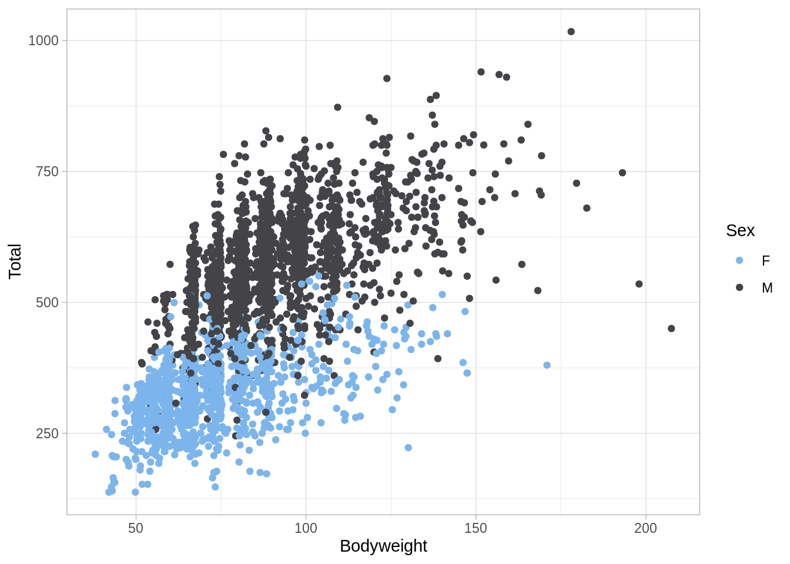
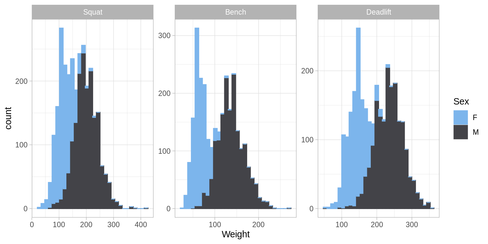
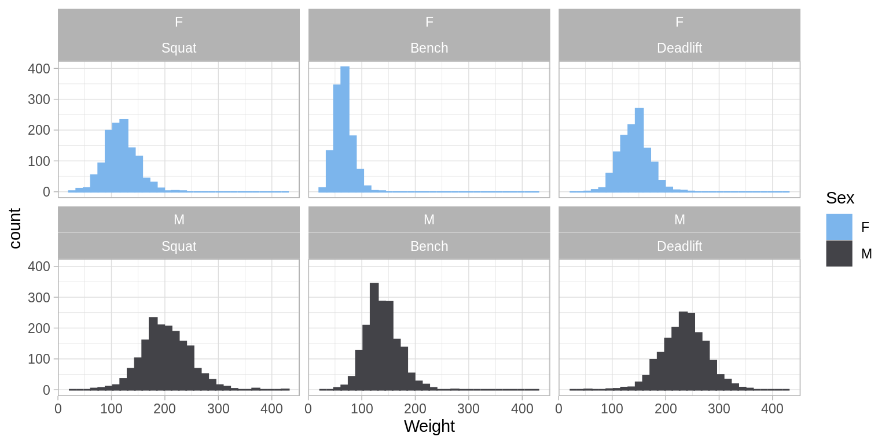

Chapter 2 Regression: Powerlifting
library(readr)
library(tibble)
library(dplyr)
library(purrr)
library(ggplot2)
library(ggridges)
library(lubridate)
library(randomForest)
library(rpart)
library(rpart.plot)
library(cluster)
library(caret)
library(factoextra)
library(rsample)
library(janitor)
library(rvest)
library(dendextend)
library(knitr)
library(kableExtra)
library(ggthemes)- TODO: Show package messaging? check conflicts!
- TODO: Should this be split into three analyses with different packages?
2.1 Background
2.2 Data
- TODO: Why readr::col_factor() and not just col_factor()?
TODO: Characters should be character and “categories” should be factors.
TODO: Is
na.omit()actually a good idea?
## # A tibble: 3,604 x 8
## Name Sex Bodyweight Age Squat Bench Deadlift Total
## <chr> <fct> <dbl> <dbl> <dbl> <dbl> <dbl> <dbl>
## 1 Ariel Stier F 60 32 128. 72.5 150 350
## 2 Nicole Bueno F 60 26 110 60 135 305
## 3 Lisa Peterson F 67.5 28 118. 67.5 138. 322.
## 4 Shelby Bandula F 67.5 26 92.5 67.5 140 300
## 5 Lisa Lindhorst F 67.5 28 92.5 62.5 132. 288.
## 6 Laura Burnett F 67.5 30 90 45 108. 242.
## 7 Suzette Bradley F 75 38 125 75 158. 358.
## 8 Norma Romero F 75 20 92.5 42.5 125 260
## 9 Georgia Andrews F 82.5 29 108. 52.5 120 280
## 10 Christal Bundang F 90 30 100 55 125 280
## # … with 3,594 more rows2.3 EDA
set.seed(1)
# test-train split
pl_tst_trn_split = initial_split(pl, prop = 0.80)
pl_trn = training(pl_tst_trn_split)
pl_tst = testing(pl_tst_trn_split)
# estimation-validation split
pl_est_val_split = initial_split(pl_trn, prop = 0.80)
pl_est = training(pl_est_val_split)
pl_val = testing(pl_est_val_split)- TODO: Train can be used however you want. (Including EDA.)
- TODO: Test can only be used after all model decisions have been made!



- TODO: https://www.tidyverse.org/
- TODO: https://en.wikipedia.org/wiki/Tidy_data
- TODO: http://vita.had.co.nz/papers/tidy-data.pdf



2.4 Modeling
dl_mod_form = formula(Deadlift ~ Sex + Bodyweight + Age + Squat + Bench)
set.seed(1)
lm_mod = lm(dl_mod_form, data = pl_est)
knn_mod = caret::knnreg(dl_mod_form, data = pl_est)
rf_mod = randomForest(dl_mod_form, data = pl_est)
rp_mod = rpart(dl_mod_form, data = pl_est)- TODO: Note: we are not using
Name. Why? We are not usingTotal. Why? - TODO: look what happens with
Total! You’ll see it withlm(), you’ll be optimistic withrandomForest(). - TODO: What variables are allowed? (With respect to real world problem.)
- TODO: What variables lead to the best predictions?
2.5 Model Evaluation

c(calc_rmse(actual = pl_val$Deadlift, predicted = predict(lm_mod, pl_val)),
calc_rmse(actual = pl_val$Deadlift, predicted = predict(knn_mod, pl_val)),
calc_rmse(actual = pl_val$Deadlift, predicted = predict(rp_mod, pl_val)),
calc_rmse(actual = pl_val$Deadlift, predicted = predict(rf_mod, pl_val)))## [1] 18.26654 19.19625 21.68142 19.23643reg_preds = map(list(lm_mod, knn_mod, rp_mod, rf_mod), predict, pl_val)
map_dbl(reg_preds, calc_rmse, actual = pl_val$Deadlift)## [1] 18.26654 19.19625 21.68142 19.23643- TODO: Never supply
data = dftopredict(). You have been warned.
## [1] 14.38953 14.99748 17.14823 15.28626reg_results = tibble(
Model = c("Linear", "KNN", "Tree", "Forest"),
RMSE = map_dbl(reg_preds, calc_rmse, actual = pl_val$Deadlift),
MAE = map_dbl(reg_preds, calc_mae, actual = pl_val$Deadlift)) | Model | RMSE | MAE |
|---|---|---|
| Linear | 18.26654 | 14.38953 |
| KNN | 19.19625 | 14.99748 |
| Tree | 21.68142 | 17.14823 |
| Forest | 19.23643 | 15.28626 |
2.6 Discussion

## [1] 22.29668- TODO: Is this a good model?
- TODO: Is this model useful?
william_biscarri = tibble(
Name = "William Biscarri",
Age = 28,
Sex = "M",
Bodyweight = 83,
Squat = 130,
Bench = 90
)## 1
## 175.495